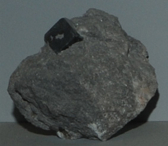
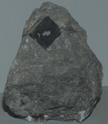

|

|

| Mg3B7O13Cl
This sample of boracite is displayed in the Smithsonian Museum of Natural History. Boracite is a mineral which contains magnesium and boron with the composition Mg3B7O13Cl. This sample is about 6x5 cm with the cubic crystal being on the order of a centimeter. It is from Wathlingen, Niedersachsen, Germany.
|